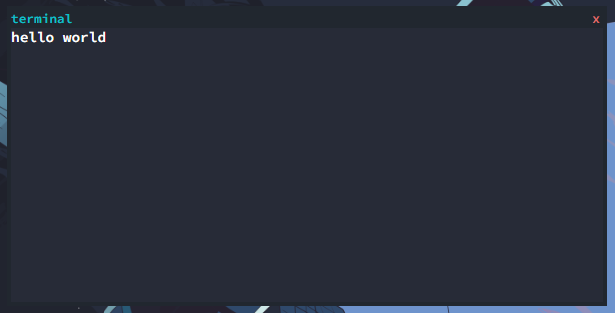

Terminal
Your app cannot function without the terminal. For some apps, the most you will ever do with it inside the terminal, is launch it.
In other apps, you can change whole config settings, launch specific areas, etc.
Outputting text
To echo text back to the console, you can use a pre-programmed js function.
terminline(text)
It works the same way
echo works.
Adding custom commands
Too add a custom command, we first must learn how to terminal works behind the scenes.
When you submit a query, the command is searched through a array. If it dosent exist, then the terminal gives a error.
But if it exists, it runs the JS code attached. The array is called
commands[] and adding to it is very easy.
commands["testcommand"] = "terminline('hi')";
Here is what it looks like if we run the
testcommand now.
root@netbox $ testcommand
hi
PLEASE NOTE: YOU CANNOT ADD SPACES WHEN ADDING A COMMAND.
Gathering User Input
Most commands you are familiar with gather some sort of user input. In this tutorial, we will recreate the echo command, which collects text from the user, and then returns it back out at them.
First, we need to use the DOM to get the data from the input box. All user input is kept in a element with the id
terminalinput This makes gathering data very easy.
Just use this line of js to get the raw text.
document.getElementById('terminalinput').textContent
To seperate just a certain part of the text, we can use the
slice() function.
document.getElementById('terminalinput').textContent.slice(8,Infinity)
I am going to skip ahead and write the entire program out right here with comments.
function echoStart() { // Creates a function so that are code is more organized
var echoTextToBe = document.getElementById('terminalinput').textContent.slice(8,Infinity); // Gets the text from terminalinput
terminline(echoTextToBe); // Writes the text back to the user
}
commands["echofake"] = "echoStart()"; // Assigns the command to the function
Terminal Apps (DEPRECATED)
While it is
STRONGLY recommended to NOT use this, I am still going to document it because it is a part of netbox and can be valuable to learn.
To enter fullscreen terminal mode, you use the
termblock(body) function. Here is a example.
termblock("hello world");

{kind=link}